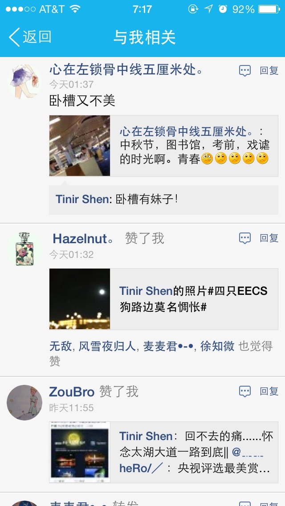

Chatt offer the quickest access to the one you chat with within app. SMS h* when h* is offline.Call h* when you miss h* voice. Make a Facetime call when you want to see h* immediately. No Internet access cannot prevent you from keeping in touch with h*. Optional notification center widget is also available.
You can share almost anything with Chatt with h*. Inclusitivity is one of Chatt's most powerful feature. You will never want to miss something to share with h*. Calendars, reminders, notes, locations, images, webpages, documents, and so on. You can turn these quick links off in settings.
No need to set h* photo as background but still got something annoying. Swipe from top to get into 'Single View Mode'. Open Chatt and h* is there! Long press to leave 'Single View Mode'.
Backup all of the moments and carry it with you. Chatt use iCloud to backup all of the profiles and chatting history. No need to export and import manually, all your memory is there with you.
New features MAY come, or MAY not. The ultimate goal is to enhance connection between 2 persons, that's the reason for the minimalist design of the UI. I do not offer lots of other 'fancy', 'seem-useful', 'may-be-used-once-or-twice' features like image filtering, sending money, boucing effects when pulling down the chat log. I will keep enhancing communication, stability and security, but not aimlessly adding new hot functionality to Chatt. Go back to the very inital state, just you and h*, connected.
why Chatt? There are so many chat app available. Why should you choose a unmature and buggy one?
Because I am the one who is experiencing little connection with my dream girl. I build this for my lifetime dream with 120% of my passion. It's primary goal is for P2P connection.
FREE for a limited time!